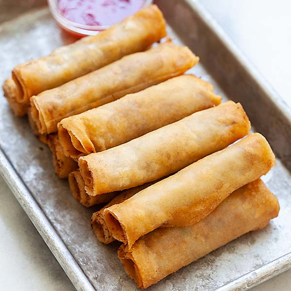

Lumpia

Description
Follow along this recipe to make crispy, homemade lumpia.
Ingredients
- 1 package Lumpia wrappers (25 sheets)
- 2 lbs (1 kg) ground pork
- 5 cloves garlic, peeled and minced
- 1 inch (2 cm) ginger, peeled and minced
- 3 tbsp soy sauce
- 1/2 tsp chicken bouillon powder (optional)
- 2 eggs, lightly beaten
- 1/2 tsp ground black pepper
- 6 oz (170 g) cabbage, thinly sliced
Steps
- Using a serrated knife, cut the square lumpia wrappers in half so that you have two stacks of rectangular wrappers.
- Place a damp paper towel over the wrappers to keep them from drying out as you work.
- Combine the pork, cabbage, garlic, ginger, soy sauce, chicken bouillon powder (if using), eggs, and ground black pepper in a large bowl.
- Using your hands, or a rubber spatula, mix the filling well so that the seasonings are evenly distributed.
- Place one of the rectangular wrappers vertically on your work surface with the short edge facing you.
- Place a heaping teaspoon of the filling on the wrapper about half an inch from the edge closest to you.
- Grasp the bottom edge of the wrapper and roll it up and over the filling, continuing to roll until 2 inches of wrapper remain.
- Dip two fingers into a bowl of water, then moisten the last 2 inches of wrapper with your fingers.
- Finish rolling the lumpia, then rest it on its seam.
- Continue rolling with the rest of the filling and lumpia wrappers.
- To cook the lumpia, fill a large frying pan with about 1/2-inch of vegetable oil.
- Heat the oil over medium-high heat.
- Gently place the lumpia into the hot oil and fry until golden brown on all sides, 3 to 5 minutes total
- Place the fried lumpia on paper towels and serve immediately with sweet and sour sauce or chili sauce.